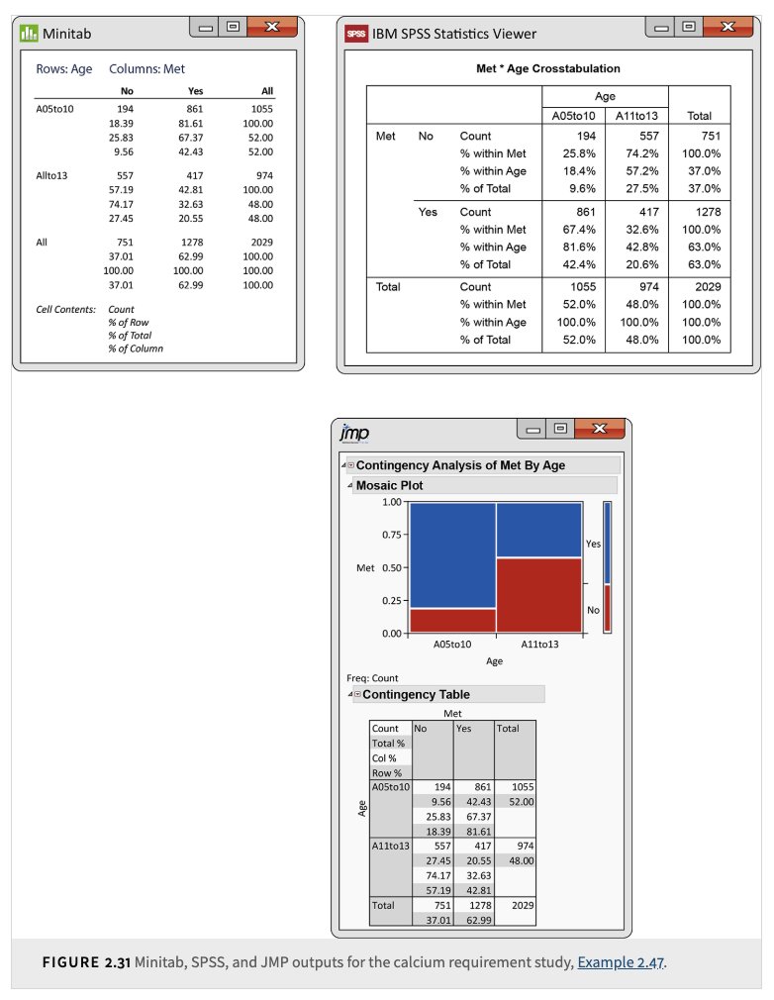

14. Two-Way Tables#
Textbook reference
This chapter corresponds to Chapters 2.5 and 9 of Introduction to the Practice of Statistics (Moore, McCabe & Craig, 10th ed.). Note that the course chapter numbers (shown in the sidebar) follow our teaching order, which differs from the textbook order.
Learning objectives
After this chapter, you will be able to:
Organize counts of two categorical variables into a two-way table and compute the joint, marginal, and conditional distributions.
Choose the right percentage — row, column, or total — for the question being asked.
Recognize Simpson’s paradox and identify the lurking variable that makes an aggregated comparison reverse.
Compute expected counts under “no association” and carry out the chi-square test of independence, checking its sample-size conditions.
Use Pearson residuals to see which cells drive a significant chi-square, and state conclusions as association, not causation.
Key concepts at a glance
The two-way table: joint, marginal, conditional · Simpson’s paradox · Inference: the chi-square test · Putting it all together
Where are we? A question before we start
Every relationship we have studied so far had at least one quantitative variable in it — something to average, something to draw a line through. But what if both variables are categorical: smoker yes/no versus disease yes/no? There are no means to compare and no line to fit. All we can do is count — how many individuals land in each combination of categories. Tables of counts turn out to need their own descriptive tools, their own famous trap, and their own test. That is this chapter.
When analyzing relationships between two variables, it’s important to determine whether the variables are quantitative or categorical:
Two Quantitative variables are analyzed using scatterplots, examining the relationship, and fitting a line to the data if it is approximately linear.
One Quantitative and one Categorical: We can describe the distribution of the quantitative variable for each value of the categorical variable.
Two Categorical variables are analyzed using counts (frequencies) or percents (relative frequencies). We can use a two-way table to summarize the raw data that gives counts of observations for each combination of values of the two categorical variables.
14.1. The two-way table#
A question before this section
In the calcium study below, 861 younger children met the requirement but only 417 older children did. Case closed — younger children eat better? Not so fast: there were more younger children in the study to begin with. Raw counts mislead whenever the group sizes differ. The whole game in a two-way table is asking percentages of what — and joint, marginal, and conditional distributions are the three well-defined answers to that question.
A two-way table displays counts of observations for each combination of values of two categorical variables.
Example 2.40: Is the calcium intake adequate?
The table summarizes whether children met the calcium requirement based on their age group (5 to 10 years or 11 to 13 years):
There are 2,029 children in the study.
Each child’s calcium intake is classified as meeting or not meeting the requirement.
Met Requirement |
5 to 10 |
11 to 13 |
|---|---|---|
No |
194 |
557 |
Yes |
861 |
417 |
The row variable is “Met Requirement,” and the column variable is “Age Group.”
Adding margins helps to summarize the data by showing totals for each row and column.
Example 2.41: Add the margins to the table
Met Requirement |
5 to 10 |
11 to 13 |
Total |
|---|---|---|---|
No |
194 |
557 |
751 |
Yes |
861 |
417 |
1278 |
Total |
1055 |
974 |
2029 |
There were 1,055 children aged 5 to 10 and 974 children aged 11 to 13.
The total number of children who did not meet the calcium requirement is 751.
The row variable indicates whether the requirement was met.
The column variable indicates the age group.
Each cell in the table corresponds to a specific combination of row and column variables.
The joint distribution shows the proportion of each cell in relation to the total sample size.
Example 2.42: The Joint Distribution
Met Requirement |
5 to 10 |
11 to 13 |
|---|---|---|
No |
0.0956 |
0.2745 |
Yes |
0.4243 |
0.2055 |
The sum of the joint distribution proportions is approximately 1 (\(\approx 0.9999\) due to rounding).
This table helps determine targeted interventions based on age groups and calcium intake.
A marginal distribution provides the distribution of one categorical variable in a two-way table.
Example 2.43: Marginal Distribution of Age
Age Group |
Proportion |
|---|---|
5 to 10 |
0.52 |
11 to 13 |
0.48 |
In this sample, 52% of the children are aged 5 to 10, and 48% are aged 11 to 13.
Example 2.44: Marginal Distribution of Met Requirement
This table shows the distribution of whether children met the calcium requirement:
Met Requirement |
Percent |
|---|---|
No |
37.01% |
Yes |
62.99% |
The majority of children (about 63%) meet the recommended calcium intake.
Graphical Representation:
Marginal distributions can be visualized using bar graphs or pie charts. These displays are useful when summarizing more complex tables. For this example:
52% of children are aged 5 to 10.
37% of children do not meet the calcium requirement.
Graphical displays provide an immediate summary of the data, especially when multiple rows or columns are involved.
We can also examine the conditional distribution of Met Requirement for children aged 5 to 10. This is an example of conditioning on the value of age to calculate the distribution of Met Requirement.
Example 2.46: Conditional Distribution of Met Requirement for Children Aged 5 to 10
Met Requirement |
No |
Yes |
|---|---|---|
Percent |
18.39% |
81.61% |
These percentages sum to 100%. In this group, 81.61% met the requirement, while 18.39% did not.
Bar Graphs and Interpretation
Bar graphs are helpful in visualizing relationships between two categorical variables. They do not provide a single numerical summary (like correlation) but allow for flexible comparisons based on chosen categories.
Warning
A two-way table contains a great deal of information in a compact form. Accurately interpreting this information often requires calculating appropriate percentages. It is advisable to use software for computations to ensure accuracy when interpreting joint, marginal, and conditional distributions.
{kind=link}

How to read this figure (three packages, one table)
All three outputs describe the same calcium two-way table; the skill is locating each percentage and knowing which question it answers. Each package prints, in every cell, the count together with up to three percentages — a row percent (cell \(\div\) row total), a column percent (cell \(\div\) column total), and a total percent (cell \(\div\) grand total). Minitab lists them stacked in each cell with a cell-contents legend; SPSS labels each line inside the cell (”% within” the row variable, “% within” the column variable, “% of Total”); JMP shows the same numbers and adds a mosaic plot, where the column widths display the marginal distribution of age and the split within each column displays the conditional distribution of Met Requirement given age.
Match the percentage to the question (row variable = Met Requirement, column variable = age group):
“What percent of children aged 5 to 10 met the requirement?” — a percent within an age column: the column percent, \(861/1055 = 81.61\%\). This is the conditional distribution given age.
“What percent of the requirement-meeters are aged 5 to 10?” — a percent within the Yes row: the row percent, \(861/1278 \approx 67.4\%\). Same cell, different denominator, different question.
“What percent of all children are young AND met the requirement?” — the total percent, \(861/2029 \approx 42.4\%\): the joint distribution.
Whenever you read such output, decide first which question you are asking, then pick the matching percent — never the other way around.
Example: heights become a two-way table
Height is quantitative — but the moment we ask a categorical question about it (“is this student taller than 5′10″?”) and pair it with a categorical variable (sex), we are in this chapter’s territory. Suppose we measure 100 students, 50 male and 50 female, and record who is taller than 70 inches:
Taller than 5′10″ |
Not taller |
Total |
|
|---|---|---|---|
Male |
22 |
28 |
50 |
Female |
1 |
49 |
50 |
Total |
23 |
77 |
100 |
Marginal distribution of “taller than 5′10″”: \(23/100 = 23\%\) of all students.
Conditional distributions given sex (row percents): among males, \(22/50 = 44\%\) are taller than 5′10″; among females, \(1/50 = 2\%\). The two conditional distributions are wildly different — a strong association between sex and the tall/not-tall classification.
These counts are no accident: with the Normal models from earlier chapters, \(P(\text{male height} > 70) \approx 0.43\) for heights \(N(69.5,\ 3)\) and \(P(\text{female height} > 70) \approx 0.01\) for heights \(N(64.5,\ 2.5)\) — close to the 44% and 2% our table shows. Discretizing a quantitative variable throws away detail, but the two-way table still captures the essential relationship.
Common misunderstanding
Students often think: “Row percents and column percents tell the same story — a percentage is a percentage.”
In fact: they divide the same cell count by different totals and answer different questions. In the heights table: among males, \(22/50 = 44\%\) are taller than 5′10″ (a row percent). Among the taller-than-5′10″ group, \(22/23 \approx 96\%\) are male (a column percent). Same cell — the 22 tall males — but 44% and 96% are answers to two entirely different questions, and neither can substitute for the other.
Quick check: in the calcium table, \(861/1055 \approx 81.6\%\) and \(861/1278 \approx 67.4\%\) both use the same cell. Which one is “the percent of younger children who met the requirement”? (The first — it conditions on age, dividing by the 1,055 younger children.)
14.2. Simpson’s paradox and two-way tables#
A question before this section
Conditional distributions fixed the unequal-group-size problem — but percentages can still ambush you. In the tables below, the treatment beats the control in every subgroup of patients, yet loses to the control overall. That is not a typo and not a rounding error. Watch an association reverse when data are aggregated — and then find the lurking variable responsible.
Simpson’s paradox happens when the pattern (or relationship) you observe in the aggregated two-way table reverses or disappears once you break the data down by a third (lurking) variable—making it effectively a three-dimensional table. Aggregating the data hides the third variable; disaggregating reveals it.
Simpson’s paradox is a reminder to look out for hidden or confounding variables and to be careful with aggregate data.
It encourages further investigation into subgroup-level patterns before drawing conclusions.
A Concrete Example:
Separate Subgroup Tables:
Imagine we have a medical trial with two subgroups based on disease severity: Mild and Severe.
Subgroup 1 (Mild Cases)
Improved
Not Improved
Row Total
Treatment
81
6
87
Control
234
36
270
Column Totals
315
42
357
Treatment success rate = \(81/87 \approx 93.1\%\)
Control success rate = \(234/270 \approx 86.7\%\)
Subgroup 2 (Severe Cases)
Improved
Not Improved
Row Total
Treatment
192
71
263
Control
55
25
80
Column Totals
247
96
343
Treatment success rate = \(192/263 \approx 73.0\%\)
Control success rate = \(55/80 \approx 68.8\%\)
Observation: In both subgroups (Mild and Severe), the Treatment group outperforms the Control group (93.1% > 86.7% in Mild; 73.0% > 68.8% in Severe).
Combined Two-Way Table:
Now suppose you combine the data (ignoring disease severity):
Improved
Not Improved
Row Total
Treatment
273
77
350
Control
289
61
350
Column Totals
562
138
700
Treatment success rate (overall) = \(273/350 = 78.0\%\)
Control success rate (overall) = \(289/350 \approx 82.6\%\)
Key Point: Overall, Control looks better than Treatment (82.6% vs. 78.0%) — even though Treatment wins in both subgroups. That flip is Simpson’s paradox in action. The reason: Treatment was given mostly to severe cases (263 of its 350 patients), while Control was given mostly to mild cases (270 of its 350 patients). Disease severity is the lurking variable — within each severity level Treatment wins, but aggregating across severity flips the comparison.
Simpson’s paradox shows that conclusions drawn from aggregated data may differ from those drawn from the analysis of disaggregated data. Always consider the possibility of lurking variables when interpreting statistical results.
Additional Example Intuition:
Imagine two hospitals, A and B, where the success rate of a certain surgery appears higher for Hospital A when considering all surgeries together. However, if we separate the surgeries based on whether they were for high-risk or low-risk patients:
Hospital B might have better success rates for both high-risk and low-risk surgeries.
Hospital A may have treated a disproportionately higher number of low-risk patients (easier surgeries), inflating its overall success rate.
Thus, the aggregation ignores the differences in patient risk, leading to a misleading conclusion.
Summary: Simpson’s paradox reveals how misleading it can be to interpret aggregated data without considering the influence of lurking variables. It demonstrates the importance of:
Breaking down the data by relevant subgroups.
Accounting for confounding factors in the analysis.
Interpreting results carefully, especially when making decisions based on combined statistics.
Warning
Always check for lurking variables or potential confounding factors when interpreting aggregated data. Simpson’s paradox serves as a reminder that aggregated statistics can be misleading without careful analysis of underlying subgroups.
14.3. Inference of two-way tables#
A question before this section
In the calcium table, 81.6% of younger children met the requirement versus only 42.8% of older children — the conditional distributions clearly differ in this sample. But eyeballing percentage differences is description, not inference: even if age and calcium intake were completely unrelated in the population, two sample percentages would rarely come out identical. The real question is the one Chapter 7 trained you to ask: are these differences bigger than chance alone would produce? For tables of counts, the test that answers it is the chi-square test.
Below is an overview of the key ideas, steps, and basic mathematical derivations for inference on two-way (contingency, crosstab) tables in statistics. We’ll focus on the classical approaches: Chi-square tests,
Below is a contingency table showing gender (Male, Female) by product preference (Product A, Product B).
Product A |
Product B |
Total |
|
|---|---|---|---|
Male |
40 |
20 |
60 |
Female |
50 |
30 |
80 |
Total |
90 |
50 |
140 |
Here:
Rows represent gender (Male and Female).
Columns represent product preference (Product A and Product B).
Each cell contains the count of observations for that combination.
Chi-Square Test of Independence: The Chi-Square Test of Independence is used with contingency tables to determine if there is a significant association between two categorical variables.
Null Hypothesis \(H_0\): The two variables are independent.
Alternative Hypothesis \(H_a\): The two variables are not independent.
The expected count for each cell is calculated under the assumption that the two variables are independent. The formula is:
Using the gender vs. product table:
Row Totals: Male = 60, Female = 80
Column Totals: Product A = 90, Product B = 50
Grand Total = 140
Example: Expected count for (Male, Product A):
Similarly:
\(E_{\text{Male, B}} = \frac{(60 \times 50)}{140} = 21.43\)
\(E_{\text{Female, A}} = \frac{(80 \times 90)}{140} = 51.43\)
\(E_{\text{Female, B}} = \frac{(80 \times 50)}{140} = 28.57\)
Summary Table: Observed vs. Expected: Below we combine observed (\(O\)) and expected (\(E\)) counts:
Product A (O) |
Product A (E) |
Product B (O) |
Product B (E) |
|
|---|---|---|---|---|
Male |
40 |
38.57 |
20 |
21.43 |
Female |
50 |
51.43 |
30 |
28.57 |
The Chi-Square statistic is:
where
\(O\) is the observed count
\(E\) is the expected count
We compute \(\frac{(O - E)^2}{E}\) for each cell and sum them up:
(Male, Product A): \(\frac{(40 - 38.57)^2}{38.57} \approx 0.053\)
(Male, Product B): \(\frac{(20 - 21.43)^2}{21.43} \approx 0.095\)
(Female, Product A): \(\frac{(50 - 51.43)^2}{51.43} \approx 0.040\)
(Female, Product B): \(\frac{(30 - 28.57)^2}{28.57} \approx 0.071\)
Summing:
Degrees of Freedom: For a Chi-Square test of independence:
where \(r\) = number of rows, \(c\) = number of columns.
In this 2×2 example:
Interpreting the Results: To interpret the result, compare the calculated \(\chi^2\) to a critical value from the Chi-Square distribution with 1 degree of freedom at \(\alpha = 0.05\).
Critical value at df = 1, \(\alpha = 0.05\): 3.84.
Our \(\chi^2 = 0.26\) is much less than 3.84.
Hence, do not reject \(H_0\). The data does not suggest a significant association between gender and product preference here.
For larger than 2×2 tables:
All cells should have expected counts of at least 1.
Fewer than 20% of cells have expected counts under 5.
For a 2×2 table (smallest case):
All cells must have expected counts of at least 5.
If these conditions fail, consider Fisher’s Exact Test.
Formula:
Why? Under independence:
\(P(A_i) = \frac{\text{Row total for }A_i}{n}\)
\(P(B_j) = \frac{\text{Column total for }B_j}{n}\)
Then,
so the expected count in cell \((i,j)\) is
Pearson Residual: The Pearson residual measures how far \(O\) is from \(E\), relative to \(\sqrt{E}\):
Small \(|Z|\) means \(O \approx E\).
Large \(|Z|\) indicates a big deviation from expectation.
For large samples, \(Z\) is roughly on a standard normal scale under the null hypothesis, though its variance is somewhat less than 1. (The adjusted (standardized) residual, which divides \(O - E\) by \(\sqrt{E\,(1 - \text{row proportion})(1 - \text{column proportion})}\), is approximately \(N(0,1)\).)
We can also view the Chi-Square statistic as summing the squares of these Pearson residuals:
If \(\chi^2\) is close to zero, \(O_{ij} \approx E_{ij}\) in all cells, supporting independence.
If \(\chi^2\) is large, it suggests a significant departure from \(H_0\) and evidence of an association.
Important
Before using the Chi-Square test, ensure expected counts are large enough (≥ 5 for 2×2). Otherwise, use Fisher’s Exact Test.
Warning
The Chi-Square test assumes a sufficiently large sample size. If you have too many low expected counts, results may be unreliable.
Example: is the second die loaded? A chi-square by hand
You roll a die you trust (Die A) 60 times and a die you suspect is loaded (Die B) 60 times, recording whether each roll is a six:
Six |
Not six |
Total |
|
|---|---|---|---|
Die A (fair) |
10 |
50 |
60 |
Die B (suspect) |
20 |
40 |
60 |
Total |
30 |
90 |
120 |
Hypotheses. \(H_0\): outcome is not associated with which die — both dice have the same probability of a six. \(H_a\): the dice differ.
Expected counts under no association, \(E = (\text{row total} \times \text{column total})/\text{grand total}\): for each die’s “six” cell, \(E = (60 \times 30)/120 = 15\); for each “not six” cell, \(E = (60 \times 90)/120 = 45\). All four expected counts are at least 5, so the 2×2 condition is met.
The statistic, cell by cell:
Decision. \(\text{df} = (2-1)(2-1) = 1\); the 0.05 critical value is 3.84. Since \(4.44 > 3.84\), we reject \(H_0\) (software gives \(P = 0.035\)). The data give evidence that the two dice do not share the same chance of rolling a six.
Direction, via Pearson residuals \(Z = (O-E)/\sqrt{E}\): Die A’s six cell has \(Z = (10-15)/\sqrt{15} = -1.29\) and Die B’s six cell \(Z = +1.29\) — sixes came up below expectation on the fair die and above expectation on the suspect one, exactly the loaded-die pattern. (The not-six cells contribute \(Z = \pm 0.75\).)
Note what the test compares: not each die against the theoretical \(1/6\), but the two dice against each other — “no association” here means “same distribution of outcomes in both rows.”
Common misunderstanding
Students often think: “The chi-square test was significant, so it has told me which cells differ — presumably the ones with the biggest counts.”
In fact: chi-square is an omnibus test. A small \(P\)-value says only that somewhere the table departs from independence; the statistic is a sum over all cells and points at none of them. To see which cells drive the result and in which direction, examine the Pearson residuals \(Z = (O - E)/\sqrt{E}\): the sign gives the direction of the departure, and the magnitude (roughly a standard normal scale) shows which cells contribute most. Raw cell size is irrelevant — a big count can sit exactly at its expected value.
Quick check: in the dice example, the four Pearson residuals are \(-1.29\) and \(+0.75\) for Die A, \(+1.29\) and \(-0.75\) for Die B. Which cells tell the loaded-die story? (The two “six” cells: below expectation for A, above for B — even though the largest counts in the table are the not-six cells.)
Common misunderstanding
Students often think: “A significant chi-square proves that one variable causes the other.”
In fact: the chi-square test detects association only — as Chapter 3 taught, an association can arise from causation, common response, or confounding, and Simpson’s paradox earlier in this chapter showed a lurking variable actively reversing one.
Quick check: an observational study finds a significant chi-square between “drinks coffee daily” and “heart disease.” Established? (No — smoking, age, and stress are all candidate lurking variables. Only a randomized experiment could isolate cause.)
14.4. Putting It All Together: Counting Our Way to a Conclusion#
Part 1 — identify the procedure. The decisive question is: what type are the two variables?
Both quantitative → scatterplot, correlation, regression (Chapters 10 and 13).
Quantitative response, categorical explanatory → compare the distribution of the quantitative variable across groups: a two-sample \(t\) for two groups, ANOVA for several.
Both categorical → a two-way table and the chi-square test (this chapter). In the special case of a 2×2 table, this is equivalent to comparing two proportions: the chi-square statistic with df = 1 is exactly the square of the two-proportion \(z\) statistic, and the two tests give the same \(P\)-value.
Three quick drills:
Does class year (freshman/sophomore/junior/senior) relate to preferred study spot (library/dorm/cafe)? (Two categorical variables → chi-square on a 4×3 table.)
Do freshmen and seniors differ in average daily study hours? (Quantitative response, two groups → two-sample \(t\).)
Is the proportion of students who own a car different between freshmen and seniors? (Two categorical variables, 2×2 → chi-square, or equivalently a two-proportion \(z\) test.)
Part 2 — the four-step chi-square walkthrough, reusing the gender × product-preference table (Male: 40 A, 20 B; Female: 50 A, 30 B; \(n = 140\)).
Step 1 — hypotheses. \(H_0\): gender and product preference are independent. \(H_a\): they are not independent.
Step 2 — expected counts and conditions. Using \(E = (\text{row total} \times \text{column total})/\text{grand total}\): 38.57 and 21.43 for males, 51.43 and 28.57 for females. All four are at least 5, so the 2×2 chi-square conditions hold.
Step 3 — the statistic. Summing \((O-E)^2/E\) over the four cells: \(0.053 + 0.095 + 0.040 + 0.071 = 0.26\), with \(\text{df} = (2-1)(2-1) = 1\).
Step 4 — decision and conclusion in context. \(\chi^2 = 0.26\) is far below the 0.05 critical value of 3.84 (software gives \(P \approx 0.61\)), so we fail to reject \(H_0\). In percentage terms: \(40/60 = 66.7\%\) of males and \(50/80 = 62.5\%\) of females preferred Product A — a 4-point gap, entirely consistent with chance. The data give no evidence of an association between gender and product preference.
14.5. Check Your Understanding#
1. From the gender × product table, compute the percent of males who prefer A and the percent of A-preferrers who are male. Which one addresses “do preferences differ by gender?”
Percent of males preferring A: \(40/60 \approx 66.7\%\) (row percent). Percent of A-preferrers who are male: \(40/90 \approx 44.4\%\) (column percent). The first — to compare preferences by gender, you need the conditional distribution of preference given gender (\(66.7\%\) for males versus \(62.5\%\) for females), not the makeup of each preference group.
2. In the medical-trial tables, the control group looked better overall (82.6% vs. 78.0%). Should a new patient therefore choose the control?
No. Within each severity level, the treatment wins (93.1% vs. 86.7% for mild; 73.0% vs. 68.8% for severe) — and every patient is either a mild or a severe case. The overall comparison is distorted by the lurking variable, disease severity: the treatment was given mostly to severe cases (263 of 350), the control mostly to mild ones (270 of 350). The subgroup comparisons are the relevant ones. This is Simpson’s paradox.
3. A student repeats the dice study with only 6 rolls per die (2 sixes for Die B, 1 for Die A) and runs a chi-square test. What’s wrong?
The expected counts are far too small: with 12 rolls and 3 sixes total, each die’s expected “six” count is \((6 \times 3)/12 = 1.5\) — well below the minimum of 5 required in every cell of a 2×2 table. The chi-square approximation is unreliable here; the student should collect more rolls or use Fisher’s Exact Test.